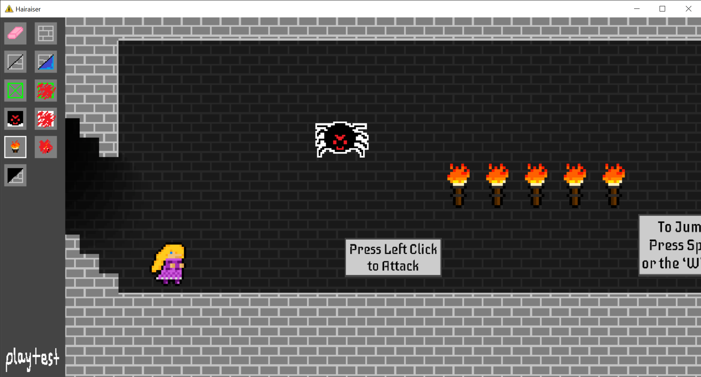

As Rapunzel, use your magic hair to fight your way down a tower full of monsters!
Genre: 2D Platformer
Development: January 2021 - April 2021
Language: C
Engine: AlphaEngine (provided by DigiPen)
This was my second DigiPen student project, and this time we had the
entire second semester of my freshman year to work on it. My biggest
contribution to our team was the in-engine level editor, filled with
features that allowed us to create/modify all of the levels that you see
in the game. I was also able to add any additional features by request of
my teammates, such as the placement of enemies and background elements
such as the torches and stairs. In addition, I implemented the player’s
attack and animation functionality, as well as the music and many of the
sound effects heard within the game.
Rapunzel's hair attack (programmed by me)
extends out in front of her and deals
damage to enemies.

My greatest contribution to Hairaiser was the
the Level Editor, which allowed my teammates
and I to easily create and test the levels
that you see in the final game, all from
within the engine.